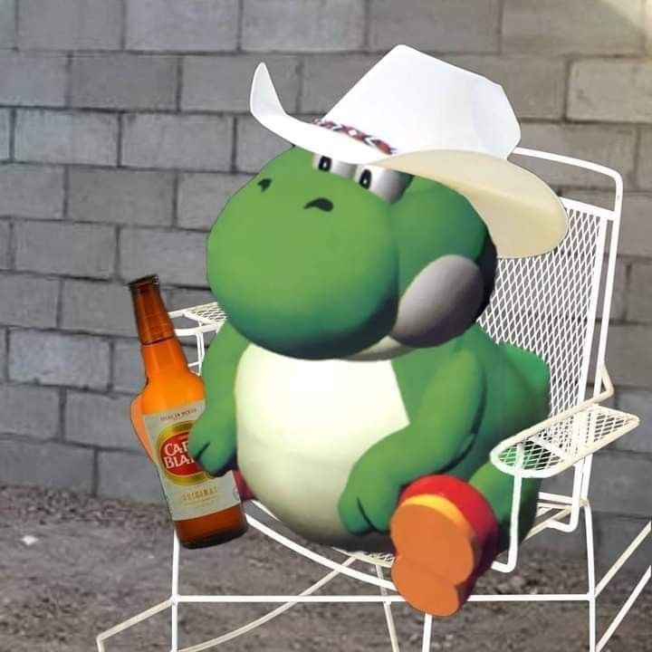
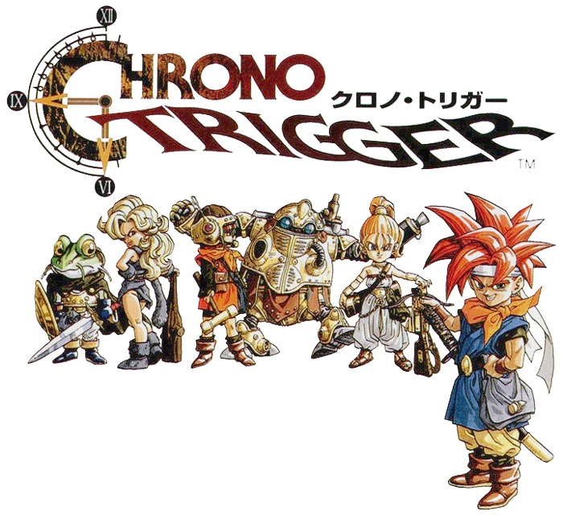
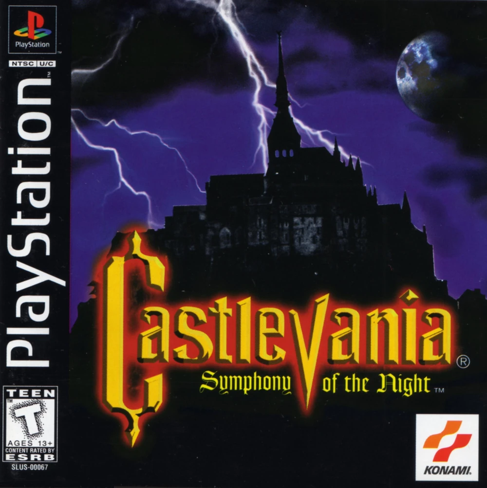
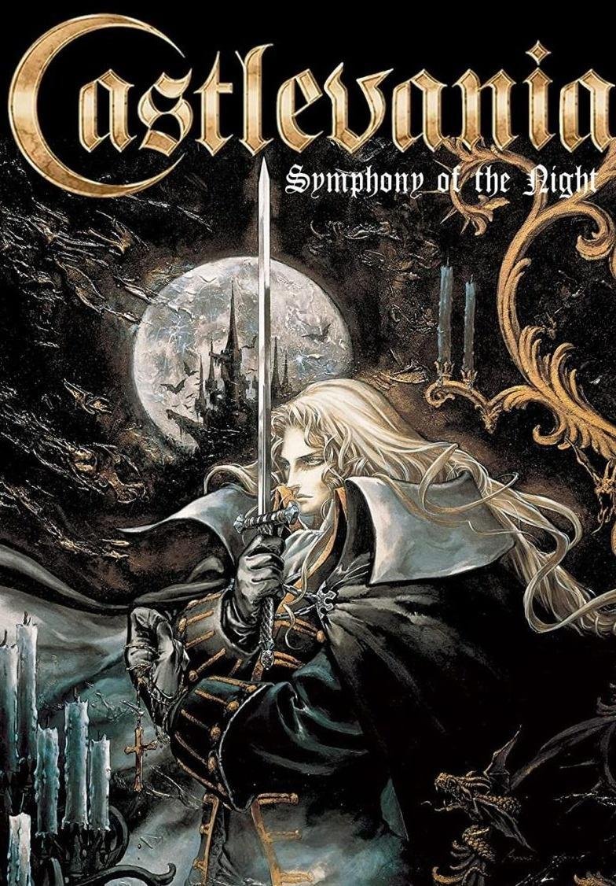
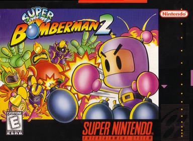
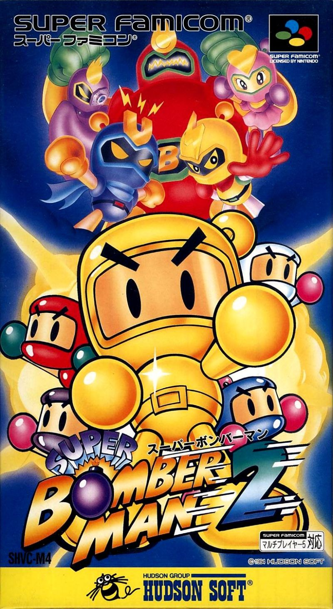

Super Mario 64
Imagine entrar em um mundo totalmente tridimensional pela primeira vez. Correr livremente, explorar castelos gigantes e descobrir segredos escondidos em cada canto. Super Mario 64 não foi apenas um jogo — foi o momento em que os videogames deram um salto para o futuro. Cada estrela conquistada representava descoberta, liberdade e inovação. Foi ali que o 3D deixou de ser experimento e virou padrão da indústria.


Chrono Trigger
Uma aventura onde o tempo não é limite — é ferramenta. Chrono Trigger levou jogadores a atravessarem eras, mudarem destinos e enfrentarem consequências reais por suas escolhas. Com personagens carismáticos e uma trilha sonora inesquecível, o jogo transformou narrativa em experiência emocional. Cada final revelava uma nova possibilidade, tornando cada jornada única e memorável.


Castlevania: Symphony of the Night
Sombras, mistério e um castelo que parecia vivo. Symphony of the Night transformou exploração em arte. Cada corredor escondia segredos, cada habilidade desbloqueada abria novos caminhos e cada batalha reforçava a sensação de progressão constante. Não era apenas derrotar inimigos — era descobrir um mundo interligado, sombrio e fascinante.


Super Bomberman 2
Poucos jogos conseguiram capturar tão bem a essência da diversão em grupo. Super Bomberman 2 transformava partidas simples em batalhas intensas, onde cada bomba podia virar o jogo em segundos. Risadas, rivalidade e estratégia rápida definiam cada rodada. Era competição pura — mas acima de tudo, diversão garantida.

